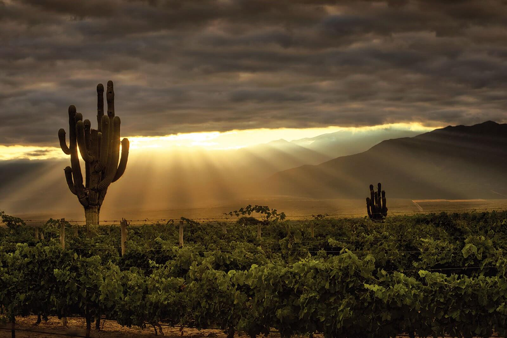

TAN LINDA QUE ENAMORA SALTA !!
CAPITAL

CAFAYATE!!
TIERRA COLORADA Y CASCADA

CORONEL MOLDES !!
PAISAJE Y DIQUE

DEPORTES EXTREMOS !!
DEPORTES EN LA CIUDAD

HISTORIA Y CULTURA !!
LAS MOMIAS,TREN DE LAS NUBES Y VIÑEDOS

TRADICIONES !!
TRADICIONES DE LAS CIUDAD DE SALTA